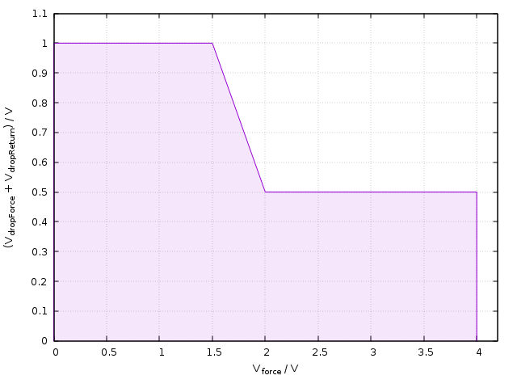

UHCM, UHCM? - (Ultra High Current power supply Modes)
The UHCM (Ultra High Current power supply Modes) command is for DC Scale UHC4T and XPS256 pins only. The command supports the UHC4T and XPS256 features.
With this command you configure setups of those sites that have the setup focus: For more information, see also: PSFC, PSFC?.
With this command you can retrieve site specific information (only one site can be in focus at a time). For the site in focus, SmarTest displays results in the Testflow Editor and in the result tools. Also, any firmware queries report setup and results for the site currently in focus only.
UHCM
UHCM {set_nr}, [time_to_alarm,] [reserved_param], [clamp_mode], [fast_preload],
[openLoopProtection,] [force_drop], [return_drop], [pulldown,] {(pinlist)}UHCM?
UHCM? {set_nr}, {(pinlist)}returns:
UHCM {set_nr}, [time_to_alarm,] [reserved_param], [clamp_mode], [fast_preload],
[openLoopProtection,] [force_drop], [return_drop], {[pulldown], {(pinlist)}Parameters
| set_nr | The mandatory identification number of the DPS set which you
want to modify:
|
||||||
| time_to_alarm | The extra parameter specifies the time (in milliseconds) from constant current clamp until an alarm flag is raised. See also ms_const_curr_time_to_alarm in DPSPINS resources. Range: 0 ... 1270 ms. This parameter is supported only by the DC Scale XPS256 card. |
||||||
| reserved_param | The optional parameter is reserved and required for compatibility. | ||||||
| clamp_mode | The optional parameter defines the clamp mode:
See also ms_const_curr_disconnect in DPSPINS resources. |
||||||
| fast_preload | The optional parameter defines the preload time in milliseconds (ms). To be used to charge large capacities for a programmable time. It does not make sense to set a shorter delay for clamp_mode than for fast_preload. A delay of zero (0) switches the fast_preload feature off. See also ms_fast_preload in DPSPINS resources. |
||||||
| openLoopProtection |
The extra parameter defines the status of the internal force to sense connections.
The internal force to sense connections are available between the P# pin and the PS# pin and between the GS# pin and the common GND pin. The following options are supported:
This parameter is supported only by the DC Scale XPS256 card. |
||||||
| force_drop | The optional parameter forces a channel to be disconnected if a user‑defined voltage drop on the force lines is reached, which means that the absolute voltage is higher than the defined threshold. The DC Scale UHC4T card and the DC Scale XPS256 card can measure the voltage drop of the force line on the DUT board. Card specific behavior:
In case the channel is switched off, a disconnect/connect sequence is required (PSST OFF/ON). See also max_voltage_drop_force in DPSPINS resources. This optional parameter is supported only by the DC Scale UHC4T card and the DC Scale XPS256 card. |
||||||
| return_drop | The optional parameter forces a channel to be disconnected if a user-defined voltage drop on the return lines is reached, which menas that the absolute voltage is higher than the defined threshold. The DC Scale UHC4T card and the DC Scale XPS256 card can measure the voltage drop of the return line on the DUT board. Card specific behavior:
In case the channel is switched off, a disconnect/connect sequence is required (PSST OFF/ON). See also max_voltage_drop_return in DPSPINS resources. This optional parameter is supported only by the DC Scale UHC4T card and the DC Scale XPS256 card. |
||||||
| pulldown | The extra parameter specifies whether a pulldown resistor is active after disconnect. Supported values:
|
||||||
| pinlist | The mandatory comma‑separated list of pins. The @ character can be used to specify all applicable pins. pinlist must contain the names of pins previously defined by the DFPS command. |
Maximum voltage drop on the UHC4T force lines
The following diagram shows the relationship between the programmed force voltage and the sum of the force_drop and the return_drop as defined in the table above. The sum of force_drop and return_drop, which is shown in the Y-axis, is limited by the programmed force voltage as shown in the diagram below. Only values within the red area are allowed.

Application
DC Scale XPS256 and DC Scale UHC4T configurations
Errors
Non-XPS256 and Non-UHC4T pins cause an error.
Example
UHCM PRM,,,,0.4,0.1,(Vee)
This example sets the voltage drop force to 0.4 V, and the voltage drop return to 0.1 V.
Functional changes
- Introduced in SmarTest 6.5.0
- SmarTest 6.5.3: Modified voltage limits for the drop parameters: force_drop and return_drop.
- SmarTest 7.5.0: Support for DC Scale FVI16 added.
- SmarTest 7.10.2: Support for DC Scale XPS256 added.
- SmarTest 7.10.3: New "openLoopProtection" extra parameter.